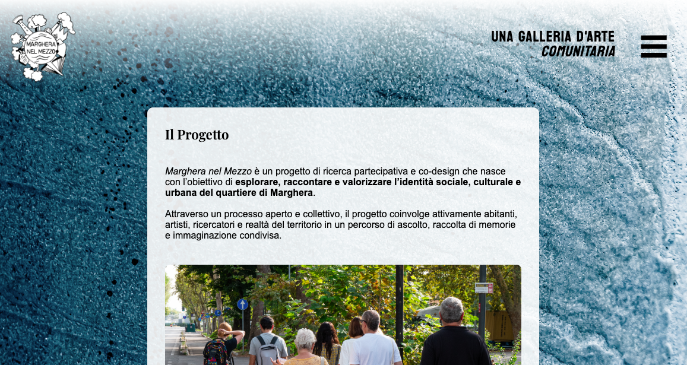
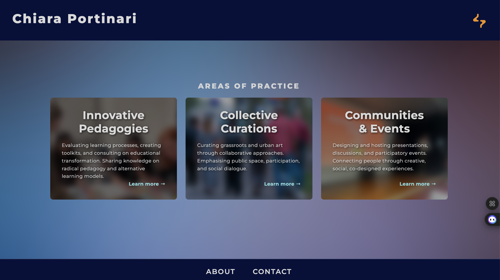

Chiara
Portinari
helps organizations and cultural practitioners
to cultivate inclusive practices.
AREAS OF PRACTICE
Innovative
Pedagogies
Innovative Pedagogies
Evaluating learning processes, creating toolkits, and consulting on educational transformation. Sharing knowledge on radical pedagogy and alternative learning models.
Learning design & radical pedagogy.
Learn more →
Collective
Curations
Collective Curations
Curating grassroots and urban art through collaborative approaches. Emphasising public space, participation, and social dialogue.
Collaborative art & public space
Learn more →
Communities
& Events
Communities & Events
Designing and hosting presentations, discussions, and participatory events. Connecting people through creative, social, co-designed experiences.
Creative events & social dialogue
Learn more →TESTIMONIALS
CREATIVE TOOLKIT
- Work with clay, gypsum, papier-mâché, collage, and origami
- Use craft for both prototypes and finished artworks
- Blend fine arts with design thinking
- Draw traditionally with fineliners and digitally on Procreate
- Create storyboards, mood boards, and presentations
- Offer live illustration to capture events creatively
- Focus on street and documentary photography
- Capture everyday stories, people, and places
- Produce participatory films and digital media
- Support projects from concept to editing and distribution
- Create content for campaigns, exhibitions, and communities
- Shape 3D, spatial, and experiential formats — from installations to workshop materials
- Combine graphic and web design with basic coding
- Build accessible and engaging digital experiences
- Design visuals for both print and online platforms


- Skilled in Adobe Premiere, Photoshop, Illustrator, Lightroom
- Experienced with Figma, Miro, and Microsoft 365
- Confident in collaborative digital teamwork
- Trained in theatre acting
- Bring stage presence, improvisation, and awareness
- Use performance skills in facilitation and presentations
- Play piano and guitar
- Use music as expression and connection
- Add sound layers to creative and participatory projects